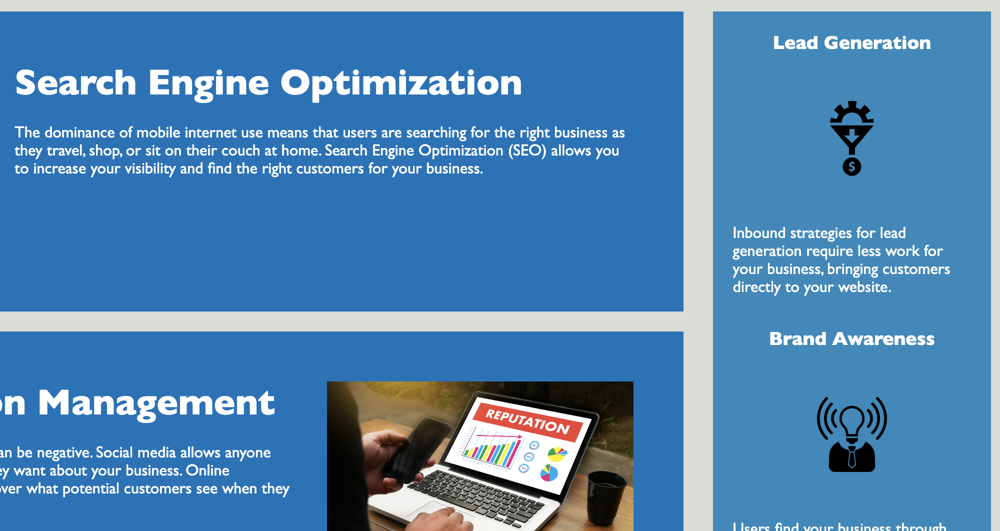
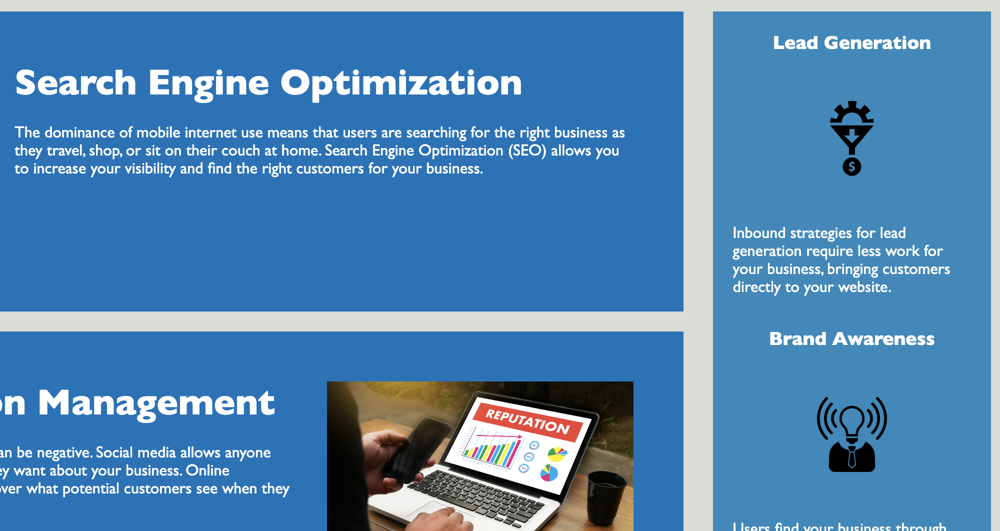
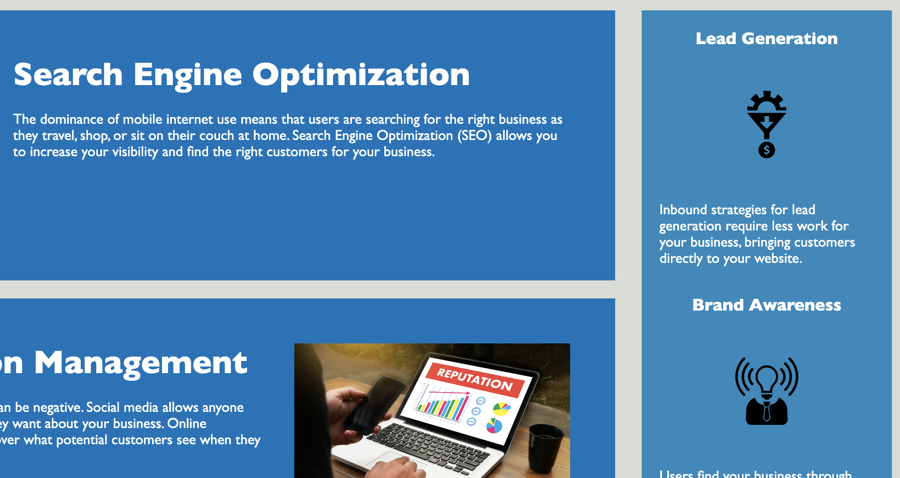

Portfolio
 



I'm Collin Haws. I am a web development bootcamp student at the University of Utah. I live in St. George, UT and love hiking and riding my motorcycle in the warm southern, UT weather. I have worked for 10+ years in different operations roles mostly in the financial industry. I decided recently I wanted to shift my career into tech but needed to seriously upskill to be qualified for the roles I wanted to work in. I am hoping to continuously build and add on to this portfolio. Feel free to contact me with any inquiries.
